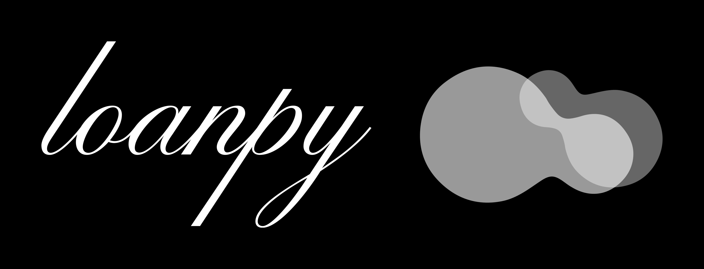

Loanpy Documentation
{kind=link}
loanpy is a toolkit for solving various linguistic tasks such as:
predicting loanword adaptation (lateral transfers)
historical reconstruction of words (vertical transfers)
searching for potential (old) loanwords between two languages.
For an installation guide, click on the Cheese Shop logo. To see the latest but perhaps not the most stable version, click on Octocat. For citation visit Zenodo:

loanpy is based on the standards offered by Cross-Linguistic Data Formats (CLDF), more information on which can be found at https://cldf.clld.org/
recover
The recover module of the loanpy package contains several functions to extract and manipulate linguistic data stored in tab-separated tables. The main function is get_correspondences, which extracts sound and prosodic correspondences from the table and returns them as six dictionaries, each with corresponding frequencies and COGID values. The module also includes uralign, a function that aligns Uralic input strings based on custom rules, and get_heur, which computes a heuristic mapping between phonemes in a target language’s inventory and all phonemes in the IPA sound system based on Euclidean distance of their feature vectors. Finally, get_inventory extracts all types of prosodic structures from a target language in a given table.
- loanpy.recover.get_correspondences(table, heur='')
Get sound and prosodic correspondences from a given table string.
- Parameters:
table (list of lists) – A list of lists representing the table that was edited with Edictor. It must contain columns named “ALIGNMENT”, “PROSODY”, and “COGID”.
heur (str) – Optional string containing heuristic correspondences to be merged with the output. Defaults to an empty string.
- Returns:
A list of six dictionaries containing correspondences and their frequencies: 1) Sound correspondences. 2) Frequency of sound correspondences. 3) COGID values for sound correspondences. 4) Prosodic correspondences. 5) Frequency of prosodic correspondences. 6) COGID values for prosodic correspondences.
- Return type:
dict
- loanpy.recover.get_heur(tgtlg)
Compute the heuristic mapping between phonemes in the inventory of a target language and all phonemes in the IPA sound system based on Euclidean distance of their feature vectors. Relies on ‘cwd/cldf/.transcription-report.json’ which contains the phoneme inventory.
- Parameters:
tgtlg (str) – The ID of the target language, as defined in etc/languages.tsv
- Returns:
A dictionary with IPA phonemes as keys and a list of closest target language phonemes as values.
- Return type:
dict
- Raises:
FileNotFoundError – If the data file or the transcription report file is not found.
- Example:
>>> get_heur('eng') {'p': ['p', 'b', 'm', 't', 'd', 'n'], 'b': ['b', 'p', 'm', 'd', 'n', 't'], 'm': ['m', 'p', 'b', 'n', 'd', 't'], ...}
- loanpy.recover.get_inventory(table)
Extracts all types of prosodic structures (e.g. CVCV) from uneven rows of the given table.
- Parameters:
data (str) – A tab-separated table in string format.
- Returns:
A dictionary containing two sets, one for segments and one for prosody.
- Return type:
dict
- loanpy.recover.uralign(left, right)
Aligns the left and right input strings based on a custom alignment for Hungarian-preHungarian.
The function splits the input strings into segments and modifies them according to certain rules. It then returns the aligned strings, joined by a newline character.
- Parameters:
left (str) – The left input string.
right (str) – The right input string.
- Returns:
The aligned left and right strings, separated by a newline character.
- Return type:
str
apply
This module provides tools for predicting and analyzing changes in the horizontal or vertical transfer of words in languages. It includes the Adrc class, which supports the adaptation and reconstruction of words based on sound and prosodic correspondences and inventories. The module also contains functions for repairing phonotactics, and working with IPA strings.
Horizontal transfer refers to the borrowing of words and linguistic features between languages in contact, while vertical transfer refers to the inheritance of words and linguistic features from a parent language to its descendants.
- class loanpy.apply.Adrc(sc='', inventory='')
Adapt or Reconstruct (ADRC) class.
This class provides functionality for automatically adapting or reconstructing words of a language, based on sound and prosodic correspondences and inventories. Inputs are generated by loanpy.recover.
- Parameters:
sc (str, optional) – The tab separated correspondence dictionary file.
inventory (str, optional) – Path to the prosodic inventory file.
- adapt(ipastr, howmany=1, prosody='')
Predict the adaptation of a loanword in a target recipient language.
- Parameters:
ipastr – Space-separated tokenised input IPA string.
howmany – Number of adapted words to return. Default is 1.
prosody – Prosodic structure of the adapted words (e.g. CVCV). Default is an empty string. Providing this triggers phonotactic repair.
- Returns:
A string containing the adapted loanwords, separated by “, “.
- Return type:
str
- get_closest_phonotactics(struc)
Get the closest prosodic structure (e.g. CVCV) from the inventory of a given language based on edit distance.
- Parameters:
struc (str) – The phonotactic structure to compare against.
- Returns:
The closest prosodic structure (e.g. CVCV) in the inventory
- Return type:
str
- get_diff(sclistlist, ipa)
Computes the difference in the number of examples between the current and the next sound correspondences for each phoneme or cluster in a word.
- Parameters:
sclistlist (list) – A list of sound correspondence lists.
ipa (str) – A space-separated string of IPA symbols representing the word.
- Returns:
A list of differences between the number of examples for each sound correspondence in the input word.
- Return type:
list
- read_sc(ipa, howmany=1)
Replaces every phoneme of a word with a list of phonemes that it can correspond to, based on specified conditions.
- Parameters:
ipa (list) – a tokenized/clusterized word
howmany (int, default=1) – The desired number of possible combinations. This is the false positive rate if the prediction is wrong but the false positive rate -1 if the prediction is right.
- Returns:
The information about which sounds each input sound can correspond to.
- Return type:
list of lists
- reconstruct(ipastr, howmany=1)
Reconstructs a phonological form from a given IPA string using a sound correspondence dictionary.
- Parameters:
ipastr – A string of space-separated IPA symbols representing the phonetic form to be reconstructed.
howmany – The maximum number of phonological forms to return. Default is 1.
- Returns:
A string of reconstructed phonological forms that match the given IPA string, based on the sound correspondence dictionary.
- Raises:
ValueError – If any of the IPA symbols in the input string are missing from the sound correspondence dictionary.
- Return type:
str
- repair_phonotactics(ipalist, prosody)
Repairs the phonotactics (prosody) of an IPA string.
- Parameters:
ipalist – A list of IPA symbols representing the input word.
prosody – A string representing the prosodic structure of the input word.
- Returns:
A list of repaired IPA strings.
- Return type:
list
- loanpy.apply.add_edge(graph, u, v, weight)
Add an edge to a graph. Called by loanpy.apply.mtx2graph.
- Parameters:
graph (dict) – The graph to be populated
u (Tuple of two integers, e.g. (0, 0)) – Position of the starting node
v (Tuple of two integers, e.g. (0, 1)) – Position of the ending node
weight (int) – The weigt of the edge connecting the two nodes
- Returns:
Updates the graph in-place
- Return type:
None
- loanpy.apply.apply_edit(word, editops)
Called by loanpy.adrc.Adrc.repair_phonotactics. Applies a list of human readable edit operations to a string.
- Parameters:
word (an iterable (e.g. list of phonemes, or string)) – The input word
editops (list or tuple of strings) – list of (human readable) edit operations
- Returns:
transformed input word
- Return type:
list of str
- Example:
>>> from loanpy.helpers import apply_edit >>> apply_edit(["l", "ó"], ('substitute l by h', 'keep ó')) ['h', 'ó'] >>> apply_edit("ló", ('keep C', 'insert C', 'insert V', 'keep V')) ['l', 'C', 'V', 'ó'] >>> apply_edit("ló", ('insert C', 'keep C', 'insert V', 'keep V')) ['C', 'l', 'V', 'ó']
- loanpy.apply.dijkstra(graph, start, end)
Find the shortest path between two nodes in a weighted graph using Dijkstra’s algorithm.
Dijkstra’s algorithm is an algorithm for finding the shortest path between two nodes in a weighted graph. It maintains a priority queue of nodes to be expanded and their tentative distances from the start node. The algorithm iteratively extracts the node with the minimum tentative distance from the priority queue and updates the tentative distances of its neighbors if a shorter path is found.
- Parameters:
graph (dict) – A dictionary representing the weighted graph, where each key is a node and each value is a dictionary representing its neighbors and edge weights.
start (any) – The starting node.
end (any) – The ending node.
- Returns:
The shortest path between the start and end nodes, represented as a list of nodes in the order they are visited, or None if no path exists.
- Return type:
list or None
- Raises:
KeyError – If the start or end node is not in the graph.
See also
- loanpy.apply.edit_distance_with2ops(string1, string2, w_del=100, w_ins=49)
Called by loanpy.helpers.Etym.rank_closest_phonotactics and loanpy.qfysc.Qfy.get_phonotactics_corresp. Takes two strings and calculates their similarity by only allowing two operations: insertion and deletion. In line with the “Threshold Principle” by Carole Paradis and Darlene LaCharité (1997) the distance is weighted in a way that two insertions are cheaper than one deletion: “The problem is really not very different from the dilemma of a landlord stuck with a limited budget for maintenance and a building which no longer meets municipal guidelines. Beyond a certain point, renovating is not viable (there are too many steps to be taken) and demolition is in order. Similarly, we posit that I) languages have a limited budget for adapting ill- formed phonological structures, and that 2) the limit for the budget is universally set at two steps, beyond which a repair by ‘demolition’ may apply. In other words, we predict that a segment is deleted if (but only if) its rescue is too costly in terms of the Threshold Principle” (p.385, Preservation and Minimality in Loanword Adaptation, Author(s): Carole Paradis and Darlene Lacharité, Source: Journal of Linguistics , Sep., 1997, Vol. 33, No. 2 (Sep., 1997), pp. 379-430, Published by: Cambridge University Press, Stable URL: http://www.jstor.com/stable/4176422). The code is based on a post by ita_c on https://www.geeksforgeeks.org/edit-distance-and-lcs-longest-common-subsequence (last access: June 8th, 2022)
- Parameters:
string1 (str) – The first of two strings to be compared to each other
string2 (str) – The second of two strings to be compared to each other
w_del (int | float, default=100) – weight (cost) for deleting a phoneme. Default should always stay 100, since only relative costs between inserting and deleting count.
w_ins (int | float, default=49.) – weight (cost) for inserting a phoneme. Default 49 is in accordance with the “Threshold Principle”: 2 insertions (2*49=98) are cheaper than a deletion (100).
- Returns:
The distance between two input strings
- Return type:
int | float
- Example:
>>> from loanpy.helpers import edit_distance_with2ops >>> edit_distance_with2ops("hey","hey") 0
>>> from loanpy.helpers import edit_distance_with2ops >>> edit_distance_with2ops("hey","he") 100
>>> from loanpy.helpers import edit_distance_with2ops >>> edit_distance_with2ops("hey","heyy") 49
- loanpy.apply.get_mtx(target, source)
Called by loanpy.helpers.mtx2graph. Similar to loanpy.helpers.edit_distance_with2ops but without weights (i.e. deletion and insertion both always cost one) and the matrix is returned.
From https://www.youtube.com/watch?v=AY2DZ4a9gyk. (Last access: June 8th, 2022) Draws a matrix of minimum edit distances between every substring of two input strings. The ~secret~ to fill the matrix: If two letters are not the same, look at the upper and left hand cell, pick the minimum and add one. If they are the same, pick the value from the upper left diagonal cell.
- Parameters:
target (iterable, e.g. str or list) – The target word
source (iterable, e.g. str or list) – The source word
- Returns:
A matrix where every cell tells the cost of turning one substring to the other (only delete and insert with cost 1 for both)
- Return type:
numpy.ndarray
- Example:
>>> from loanpy.helpers import get_mtx >>> get_mtx("bcde", "de") array([[0., 1., 2., 3., 4.], [1., 2., 3., 2., 3.], [2., 3., 4., 3., 2.]]) >>> # What in reality happened (example from video): # deletion costs 1, insertion costs 1, so the distances are: # B C D E # hashtag stands for empty string # 0 1 2 3 4 # distance B-#=1, BC-#=2, BCD-#=3, BCDE-#=4 D 1 2 3 2 3 # distance D-#=1, D-B=2, D-BC=3, D-BCD=2, D-BCDE=3 E 2 3 4 3 2 # distance DE-#=2, DE-B=3, DE-BC=4, DE-BCD=3, DE-BCDE=2 # the min. edit distance from BCDE-DE=2: delete B, delete C
- loanpy.apply.list2regex(sclist)
Called by loanpy.adrc.Adrc.reconstruct. Turns a list of phonemes into a regular expression.
- Parameters:
sclist (list of str) – a list of phonemes
- Returns:
The phonemes from the input list separated by a pipe. “-” is removed and replaced with a question mark at the end.
- Return type:
str
- Example:
>>> from loanpy.helpers import list2regex >>> list2regex(["b", "k", "v"]) '(b|k|v)'
>>> from loanpy.helpers import list2regex >>> list2regex(["b", "k", "-", "v"]) '(b|k|v)?'
- loanpy.apply.move_sc(sclistlist, whichsound, out)
Moves a sound correspondence from the input list to the output list and updates both lists.
- Parameters:
sclistlist (list of lists) – A list of lists containing sound correspondences.
whichsound (int) – The index of the sound to be moved.
out (list of lists) – The output list where the sound correspondence will be moved to.
- Returns:
An updated tuple containing the modified sclistlist and out.
- Return type:
tuple of (list of lists, list of lists)
- loanpy.apply.mtx2graph(matrix, w_del=100, w_ins=49)
Converts a distance-matrix to a weighted directed graph
- Parameters:
matrix (A list of list of integers) – The distance matrix, generated by loanpy.apply.get_mtx.
- W_del:
Weight of deletions. According to the Theory of Constraints and Repair Strategies (TCRS), two insertions are cheaper than one deletion. Therefore, the weight of deletions, i.e. moving horizontally through the matrix, is set to 49 by default.
- W_ins:
Weight of insertions. Set to 100 by default, so that two insertions (2*49=98) are still cheaper than a deletion.
- Returns:
A directed graph with weighted edges
- Return type:
dictionary with tuples as keys and dictionaries as values. The value-dictionaries contain tuples as keys and weights (integers) as values. All tuples contain two integers that represent the position of a node in the matrix/graph, e.g. (0, 0).
- loanpy.apply.substitute_operations(operations)
Replaces subsequent “delete, insert” / “insert, delete” operations with “substitute”. Called by loanpy.apply.tuples2editops.
- Parameters:
operations (List of strings, e.g. ['insert l', 'delete h', 'keep ó']) – A list of human readable edit operations
- Returns:
Updated operations
- Return type:
List of strings, e.g. [‘substitute l by h’, ‘keep ó’]
- loanpy.apply.tuples2editops(op_list, s1, s2)
Called by loanpy.helpers.editops. The path how string1 is converted to string2 is given in form of tuples that contain the x and y coordinates of every step through the matrix shaped graph. This function converts those numerical instructions to human readable ones. The x values stand for horizontal movement, y values for vertical ones. Vertical movement means deletion, horizontal means insertion. Diagonal means the value is kept. Moving horizontally and vertically after each other means substitution.
- Parameters:
op_list (list of tuples of 2 int) – The numeric list of edit operations
s1 (str) – The first of two strings to be compared to each other
s2 (str) – The second of two strings to be compared to each other
- Returns:
list of human readable edit operations
- Return type:
list of strings
- Example:
>>> from loanpy.helpers import tuples2editops >>> tuples2editops([(0, 0), (0, 1), (1, 1), (2, 2)], "ló", "hó") ['substitute l by h', 'keep ó'] >>> # What happened under the hood: # (0, 0), (0, 1): move 1 vertically = 1 deletion # (0, 1), (1, 1): move 1 horizontally = 1 insertion # insertion and deletion after each other equals substitution # (1, 1), (2, 2): move 1 diagonally = keep the sound
eval
This module focuses on evaluating the quality of adapted and reconstructed words in a linguistic dataset by leveraging data-driven and heuristic prosodic and phonetic correspondences. It processes the input data, which consists of tokenised IPA source and target strings, as well as prosodic strings, and applies the correspondences to predict the best possible adaptations or reconstructions. The module then calculates the accuracy of the predictions by generating a table of false positives (how many guesses) vs true positives, providing insights into the effectiveness of this method. Additionally, the module offers the option to apply phonotactic repairs, allowing for more refined analysis of the linguistic data. Overall, this module aims to facilitate a deeper understanding of loanword adaptation and historical sound change processes by quantifying the success rate of predictive models.
- loanpy.eval.eval_all(edicted, heur, adapt, guess_list, pros=False)
Get a table of False Positives (how many guesses) vs True Positives.
- Parameters:
edicted (list of lists) – The input tsv-table, edited with the Edictor.
heur (list) – The heuristic prosodic correspondences.
adapt (bool) – Whether words are adapted or reconstructed.
guess_list (list of int) – The list of number of guesses to evaluate.
pros (bool, default=False) – Wheter phonotactic repairs should be applied
- Returns:
A list of tuples of integer-pairs representing false positives vs true positives
- Return type:
tuple
- loanpy.eval.eval_one(edicted, heur, adapt, howmany, pros=False)
Evaluate the quality of the adapted and reconstructed words. Called by loanpy.eval.eval_all.
- Parameters:
edicted (list of lists) – The input tsv-table, edited with the Edictor. Tokenised IPA source and target strings must be in column 3. Prosodic strings in column 4.
heur (dict) – The heuristic sound and prosodic correspondences. Created with loanpy.recover.get_correspondences
adapt (bool) – Whether words are adapted or reconstructed.
howmany (list) – Howmany guesses should be made. Treated as false positives.
pros (bool, default=False) – Whether phonotactic/prosodic repairs should apply
- Returns:
A tuple with the ratio of successful adaptations/reconstructions (rounded to 2 decimal places).
- Return type:
tuple
find
This module is designed to identify and analyze potential loanwords between a donor and a recipient language. It processes two input dataframes, one representing the donor language with adapted forms and the other representing the recipient language with reconstructed forms. The module first identifies phonetic matches between the two languages and then calculates their semantic similarity. The output is a list of candidate loanwords, which can be further analyzed for linguistic or historical purposes.
The primary functions in this module are responsible for finding phonetic matches between the given donor and recipient language data and calculating their semantic similarity. These functions process the input dataframes and compare the phonetic patterns, as well as calculate the semantic similarity based on a user-provided function. The module returns a list of candidate loanwords ranked by their phonetic and semantic similarities. The output can then be used to study linguistic borrowing, adaptation, and reconstruction processes between the donor and recipient languages.
- loanpy.find.phonetic_matches(df_ad, df_rc)
Finds phonetic matches between the given donor and recipient TSV files.
The function processes the donor and recipient data frames, compares the phonetic patterns, and returns the matched data as a string in TSV format.
- Parameters:
df_ad (list of lists. Column 5 must be a list of predicted loanword adaptations. Col 0: ID in df_ad, Col 2: The form of the word, Col 4: its meanings.) – Table of the donor language data with adapted forms.
df_rc (list of lists. Column 4 must contain predicted reconstructions as a regular expression. Col 0: The ID in df_rc, Col 2: The form of the word. Col 3: its meanings.) – Table of the recipient language data with reconstructed forms.
- Returns:
A string containing the matched data in TSV format, with the following columns: ID, loanID, adrcID, df, form, predicted, meaning.
- Return type:
str
- loanpy.find.semantic_matches(phmtsv, get_semsim)
Calculate the semantic similarity between pairs of rows in phmtsv using the function get_semsim, and add columns with the calculated similarity and the closest semantic match to each row.
- Parameters:
phmtsv (list of lists) – phonetic matches tsv, generated by loanpy.find.phonetic_matches. Each sublist represents a row of data. The first sublist should contain the header row, and each subsequent sublist should contain the data for one row. The meanings have to be in column 6.
get_semsim (function) – A function that calculates the semantic similarity between two strings.
- Returns:
A tab-separated string representing the top 1000 semantically most similar meanings in phmtsv with the added columns for semantic similarity and closest semantic match, sorted in descending order by semantic similarity and ascending order by loanID.
- Return type:
str
help
Contains helper functions and class Etym, which are called internally. Some of the functions may also be useful for the user in other linguistic contexts.
- loanpy.help.cvgaps(str1, str2)
Input two aligned strings Replace “-” by C or V depending on the other sound return the new strings as a list
- loanpy.help.find_optimal_year_cutoff(tsv, origins)
Generated by GPT-4 on March 16 2023.
- loanpy.help.is_same_length_alignments(data)
Assert that alignments within a cogset have the same length. Alignments must be in col 3, col name doesn’t matter
- loanpy.help.is_valid_language_sequence(data, source_lang, target_lang)
Validate if the data has a valid alternating sequence of source and target languages.
The data is expected to have language IDs in the second column (index 1). The sequence should be: source_lang, target_lang, source_lang, target_lang, …
- Parameters:
data (list) – A list of lists containing language data.
source_lang (str) – The expected source language ID.
target_lang (str) – The expected target language ID.
- Returns:
True if the sequence is valid, False otherwise.
- Return type:
bool
- loanpy.help.modify_ipa_all(input_file, output_file)
Original file is from folder “data” in panphon 0.20.0 and was copied with the written permission of the author. The ipa_all.csv table of loanpy was created with this function. Following modifications are undertaken: 1) All “+” signs are replaced by 1, all “-” signs by -1 2) Four phonemes are appended to the column “ipa”, namely “C”, “V”, “F”, “B”: “any consonant”, “any vowel”, “any front vowel” and “any back vowel” 3) Any phoneme containing “j” or “w” is defined as a consonant
- loanpy.help.prefilter(data, srclg, tgtlg)
Keep only cogsets where source and target language occurs.